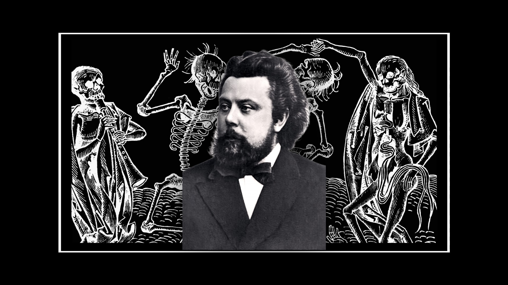
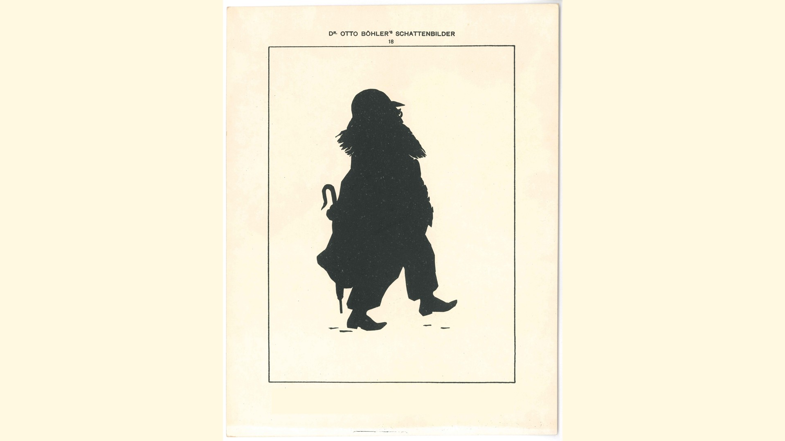
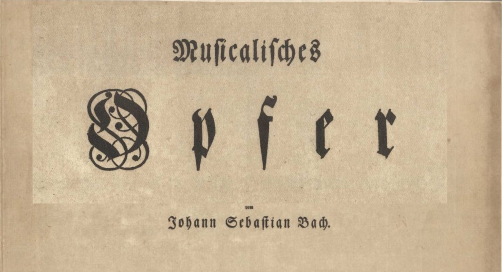

About
I am Asterios, 28 years old from Greece. I found no way of including everything I have done in a single CV or a social media account, since my interests are diverse, so I created this simple page. Here you will find links to my video documentaries, programming projects, personal bibliography, writings, amateur paintings and more.
Documentaries

Modest Musorgsky - Songs and Dances of Death (Песни и пляски смерти)
An examination of Realism in Nineteenth century Russia and an analysis of Musorgsky's Songs and Dances of Death.

Brahms at Ischl: Opp. 118 & 119
A positioning of Johannes Brahms in the romantic context of late 19th century Vienna, his life at Bad Ischl and an analysis of his last solo piano compositions.

J. S. Bach at Potsdam: Musical Offering (Musikalisches Opfer). BWV 1079
J. S. Bach visits Friedrich the Great at Potsdam, and a few months later he offers him a musical work.
Writings
EN: Modest Musorgsky - Songs and Dances of Death (Песни и пляски смерти)
Bibliography
Projects
Music
Prelude in A minor
Fugue in C minor
Unfinished Fugue for Piano and Cello
More on SoundCloud
Support
- XMR: 85WPqkgwnJ29PxN3xVT5ek4Amwn1XcPUmadRmgibowry954Hqj7QQbe6WG384CkYgxZFd1CYGT1dU8Y8kKSmhXPf33wV4bM
- BTC: bc1qenqhpy998w9e0h2m2tdn2ugxkarpw23ap8938u
- AVAX: 0x6019BBC14E0b06595601dB7D17D8E82813D87D9D
Contact
- Gmail: asterioszer
- YouTube: Zasterios
- GitHub: azerv1
- LinkedIn: Asterios Zervos
- SoundCloud: Asterios